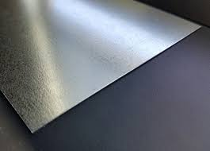
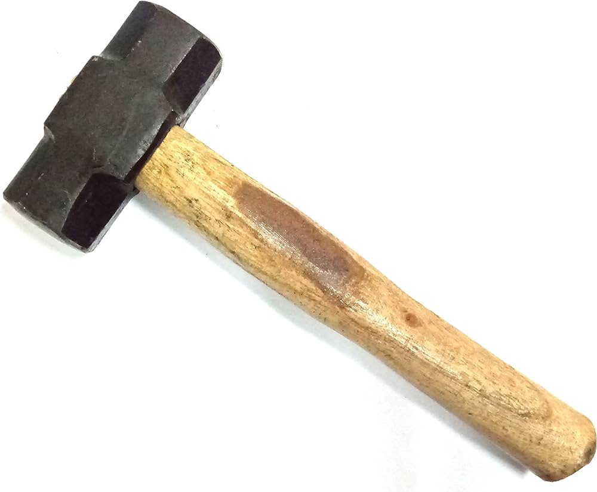
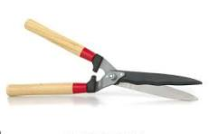
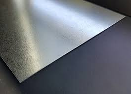
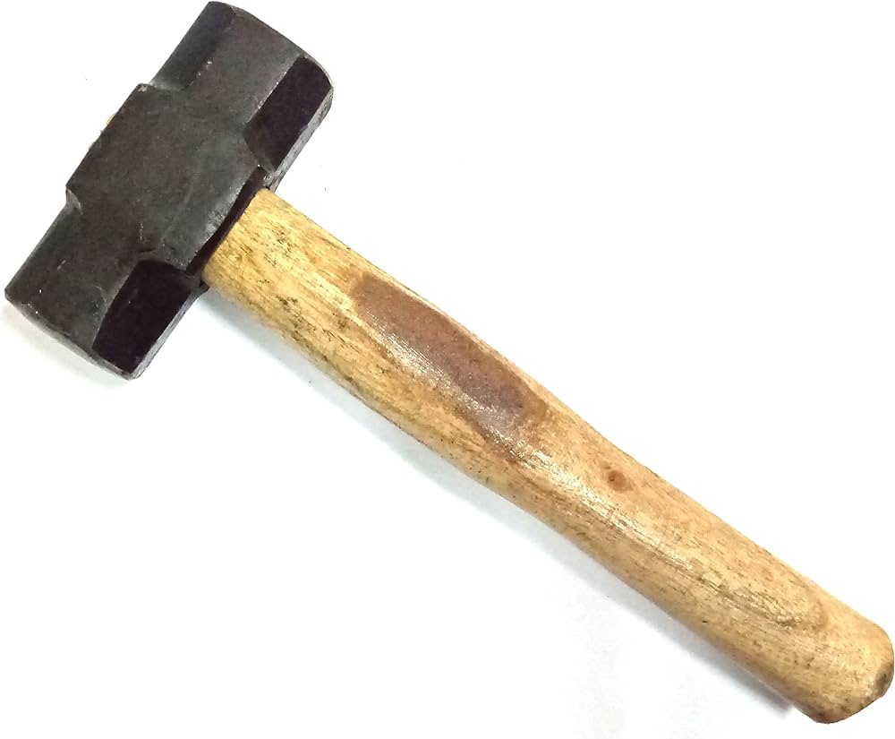
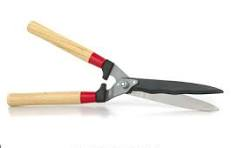

What is Tin Smithy?
Tin smithy is the art of making and repairing items made of tin or other light metals. Tinsmiths fabricate items such as water pitchers, forks, spoons, and candle holders using tools similar to those of a coppersmith.
Tools of the Trade
 





History of Tin Smithy
The history of tin smithy dates back to the early 18th century when the art of making household items out of tin came to the colonies from England. The British Government prohibited the production of tin and iron in America, making tin a rare and valuable material. After the American Revolution, the ban on production was lifted, and tin became more readily available.
How to Make a Tin Lantern Cover
Here's a simple guide to making a tin lantern cover using aluminum foil:
- Supplies:
- Aluminum foil (heavy duty works best)
- Pattern for your design (historic templates available or design your own)
- Scotch tape or masking tape
- Heavy duty work surface (e.g. cutting board)
- Tool for punching holes (e.g. small Philips head screwdriver, nail, or thumbtack)
- Hammer or other unbreakable household object to drive your punch
- Step-by-Step Instructions:
- Select a pattern.
- Cut a sheet of aluminum foil large enough to cover your pattern.
- Tape the pattern to the foil by adding small pieces of tape along each side or near each corner.
- Place your pattern and foil on the work surface.
- Holding your tool for punching holes, position the tip of the tool on top of a dot on the pattern.